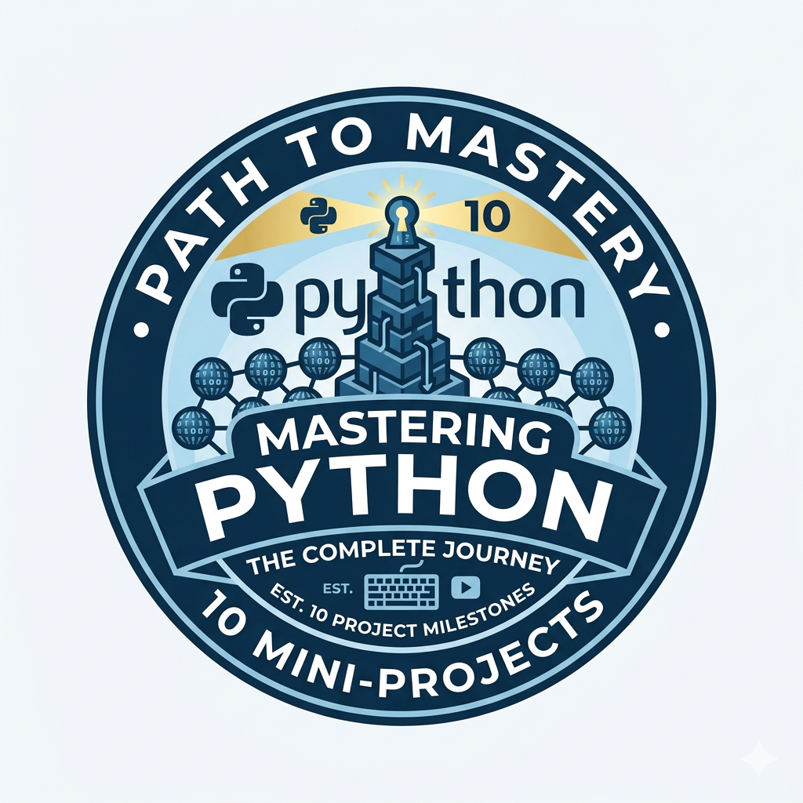

Transforming data into actionable insights using Python, SQL, and Power BI. Specializing in clean, reproducible, and scalable workflows for business and financial intelligence.
Data Analyst with expertise in turning complex datasets into actionable business insights. Focused on clean, reproducible, and scalable workflows for data-driven decision making.

Python projects focused on automation, data handling, and problem-solving.
View Project →SQL & Power BI dashboards for sales, product, and customer analysis.
View Project →Time-series analysis detecting profitable candlestick patterns using Python.
View Project →Identify the business domain, goals, and data sources to improve.
Gather datasets from files, APIs, or databases.
Prepare, clean, and validate raw data for analysis.
Explore distributions, trends, and anomalies.
Create dashboards, charts, and KPIs to communicate insights.
Deliver actionable recommendations to support decisions.
Email: santiagoacostab17@gmail.com
GitHub: github.com/santiagoacostab17
LinkedIn: linkedin.com/in/santiagoacostab17